正·青色系
| 名称 | HEX | RGB | CMYK | 展示 | 远天蓝 | #d0dfe6 | R:208 G:223 B:230 | C:25 M:6 Y:10 K:0 |
远天蓝色，柔和且清新，带有淡淡的蓝色调。象征着宁静与广阔，传递出宁静与广阔的氛围。 |
星蓝 | #93b5cf | R:147 G:181 B:207 | C:53 M:19 Y:15 K:1 |
星蓝色（Stellar Blue）是一种深邃而神秘的蓝色，带有微妙的灰紫调，仿佛夜空中闪烁星辰的冷静光辉。 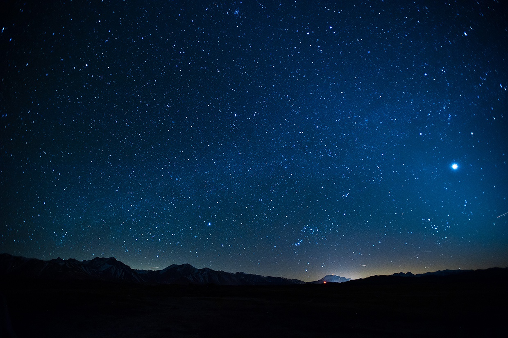 |
羽扇豆蓝 | #619ac3 | R:97 G:154 B:195 | C:74 M:27 Y:16 K:2 |
羽扇豆蓝是一种介于天蓝与靛蓝之间的清冷色调，带有大自然气息，常见于羽扇豆花田和晴朗天空。 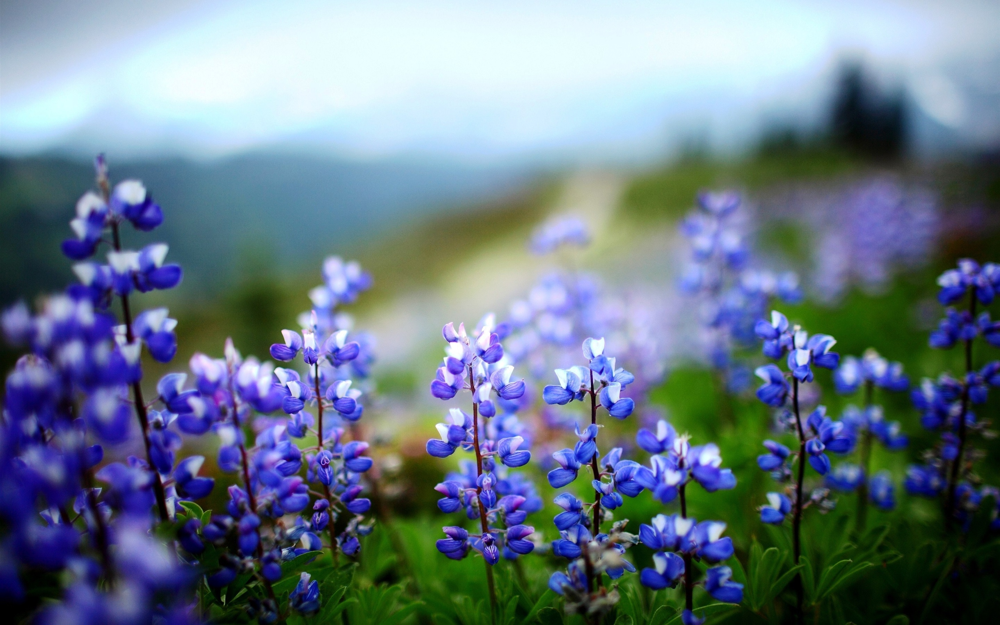 |
钴蓝 | #1a94bc | R:26 G:148 B:188 | C:94 M:16 Y:23 K:3 |
钴蓝（Cobalt Blue）是一种明亮而浓郁的纯正蓝色，带有微微冷调，因钴元素的氧化物而得名，常用于绘画颜料与陶瓷釉彩，展现深邃且富有张力的视觉效果。 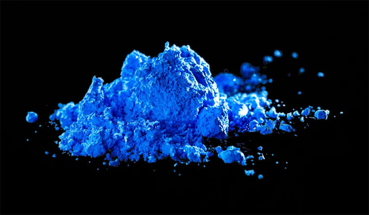 |
飞燕草蓝 | #0f59a4 | R:15 G:89 B:164 | C:100 M:65 Y:11 K:1 |
飞燕草蓝（Delphinium Blue）是一种清亮高雅的蓝色，介于浅蓝与深蓝之间，灵感来自飞燕草花瓣的纯净色泽，带有一丝紫调，展现出柔和而富有生命力的美感。 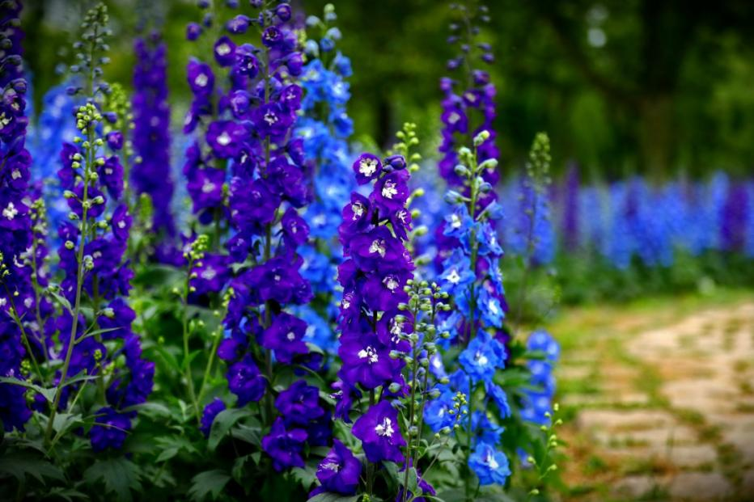 |
釉蓝 | #1781b5 | R:23 G:129 B:181 | C:96 M:34 Y:18 K:4 |
釉蓝（Glaze Blue）是一种深邃而温润的蓝色，灵感来源于青花瓷与琉璃釉面的色泽，介于群青与钴蓝之间，透出典雅沉静的东方韵味。 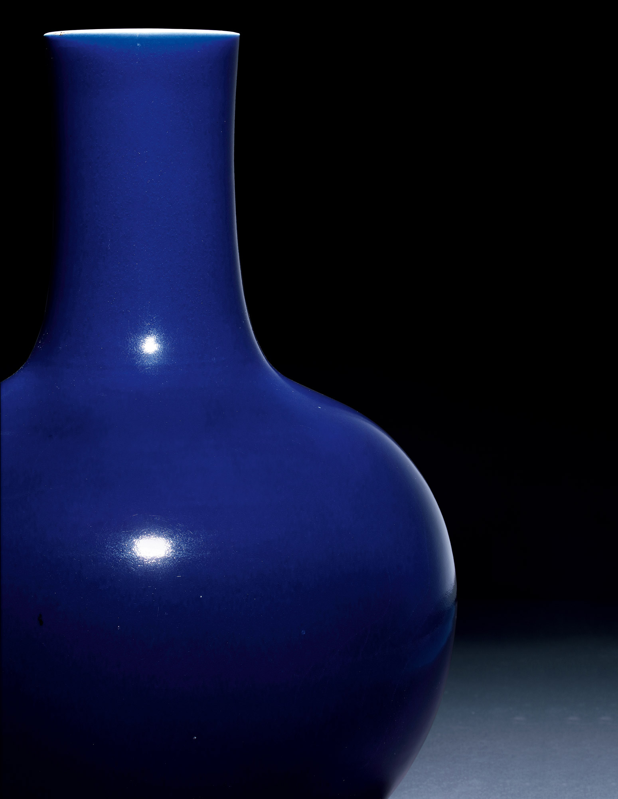 |
搪磁蓝 | #11659a | R:210 G:180 B:44 | C:17 M:27 Y:94 K:4 |
搪瓷蓝（Enamel Blue）是一种明亮而略带光泽的蓝色，介于钴蓝和湖蓝之间，灵感源自搪瓷制品的光滑釉面，呈现出复古而富有质感的视觉效果。 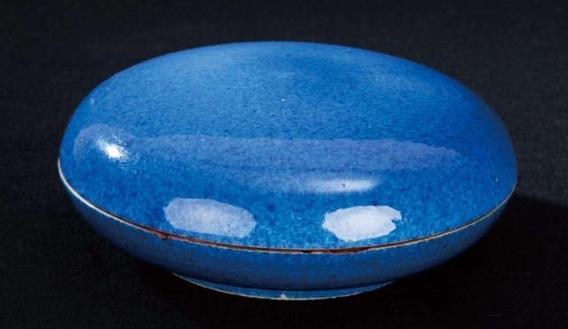 |
鷃蓝 | #144a74 | R:20 G:74 B:116 | C:100 M:68 Y:32 K:20 |
鷃蓝色（Yàn Blue）是一种深邃而沉静的蓝色，带有一丝灰调，灵感源自鷃鸟羽毛的低调冷峻之美，既内敛又富有质感。 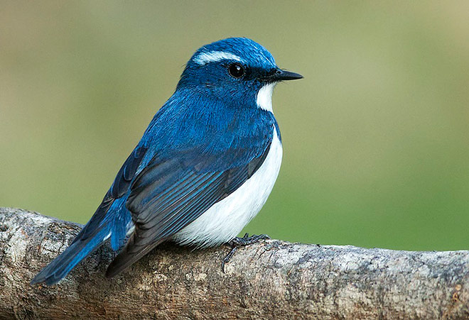 |
鸽蓝 | #1c2938 | R:28 G:41 B:56 | C:100 M:77 Y:50 K:62 |
鸽蓝，清冷而柔和，宛如晨曦下鸽羽上泛起的淡淡蓝灰，沉静中透着一丝优雅，轻盈却不失深邃，仿佛微风拂过云影，带来一抹宁静与安然，低调而含蓄，映射出一种温润的从容之美。 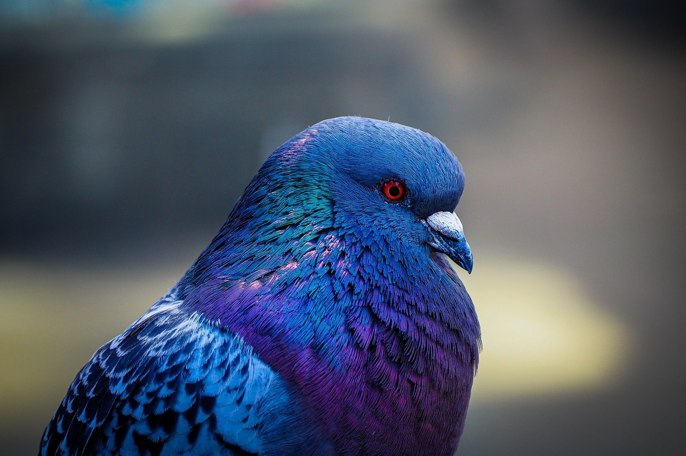 |
靛青 | #1661ab | R:22 G:97 B:171 | C:100 M:60 Y:8 K:1 |
靛青，深邃而神秘，仿佛夜幕降临时天空与海洋交汇的幽蓝，沉静中透着理性与深思，既有青色的清冷，又融入蓝色的深远，犹如流淌在古老染坊中的靛蓝染液，在时光中沉淀出隽永的韵味，低调而富有力量。 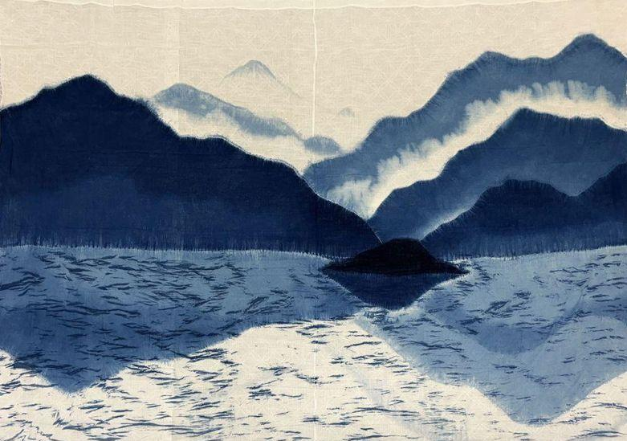 |
虹蓝 | #2177b8 | R:33 G:119 B:184 | C:99 M:44 Y:10 K:1 |
虹蓝，澄澈而灵动，宛如雨后彩虹中最纯净的一抹蓝光，明亮中透着一丝神秘，仿佛清晨湖面上泛起的微光，既有天空的辽远，又带着水波的轻盈，清新而富有生机，映射出大自然最梦幻的色彩。 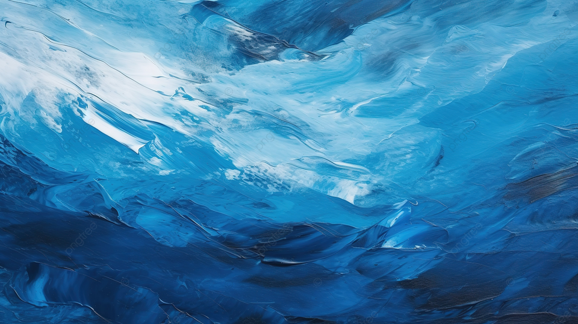 |
秋波蓝 | #8abcd1 | R:138 G:188 B:209 | C:59 M:12 Y:19 K:0 |
秋波蓝，清澈而灵动，仿佛微风拂过湖面泛起的粼粼波光，轻盈中透着一丝宁静，淡雅却不失生机，映照着天空的湛蓝与流水的柔和，宛如一曲悠然流淌的诗篇，令人心生恬淡与安然。 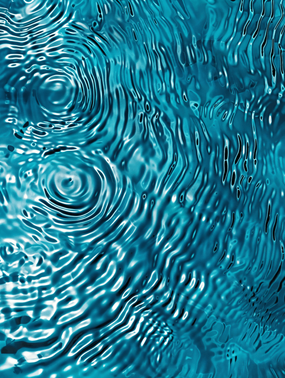 |
碧青 | #5cb3cc | R:92 G:179 B:204 | C:67 M:60 Y:57 K:68 |
碧青，凝练而典雅，宛如一件古老艺术品上蕴藏的深邃色彩，温润而又清澈，仿佛岁月雕刻下的痕迹，透出一股悠远的气息与独特的韵味，犹如翡翠的光泽在光影中流转，低调中展现出非凡的艺术气质与历史的积淀。 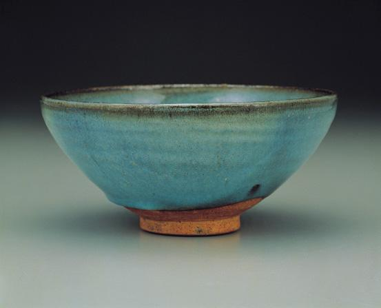 |
闪蓝 | #7cabb1 | R:124 G:171 B:177 | C:64 M:18 Y:32 K:2 |
闪蓝，如同蝴蝶翅膀上闪烁的蓝光，璀璨而轻盈，带着一丝梦幻的光辉，仿佛是微风中舞动的翅膀在阳光下划过，流转着清冷与灵动的气息，既神秘又充满生命力，像蝴蝶翩跹飞舞时留下的光影，令人心醉神迷。 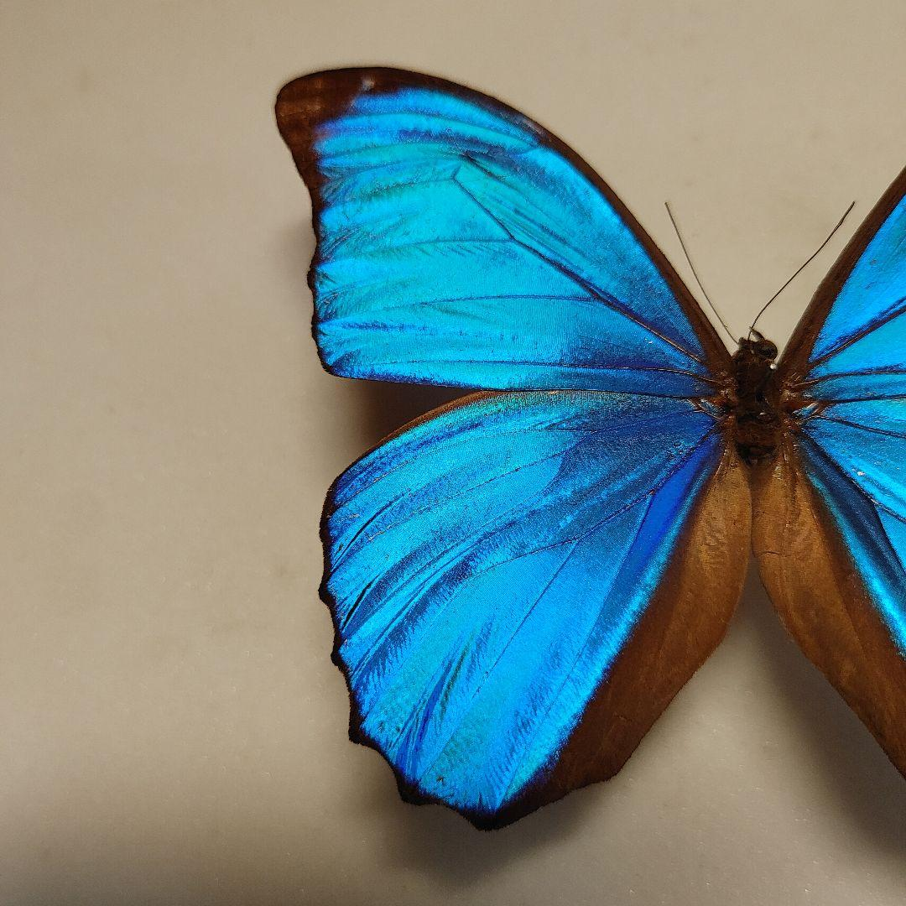 |
|---|